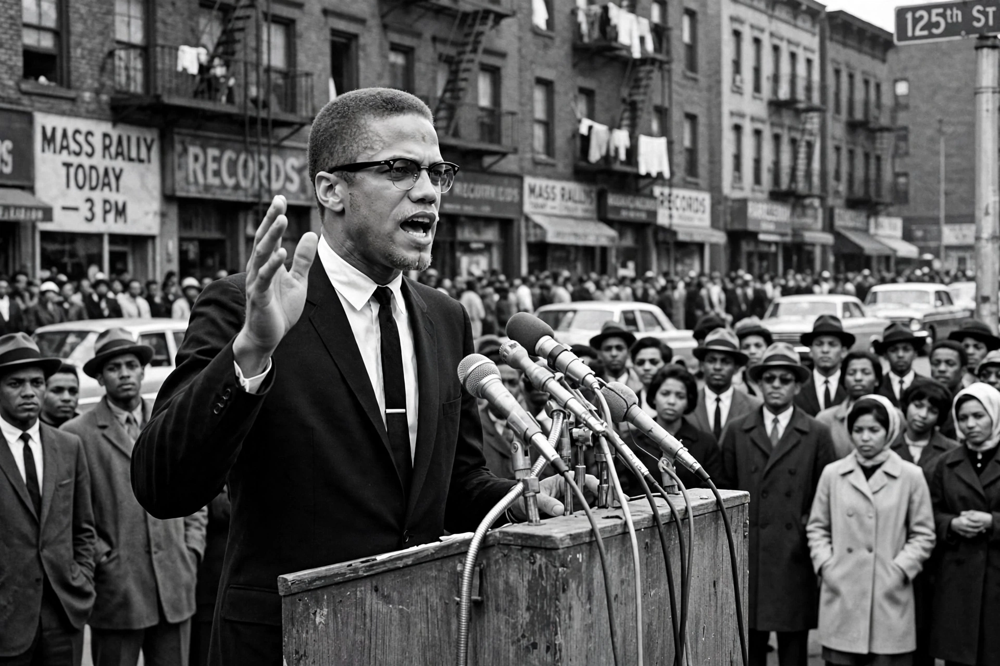

Malcolm X
From Wikipedia, the free encyclopedia

Malcolm X (born Malcolm Little, later el-Hajj Malik el-Shabazz; 19 May 1925 – 21 February 1965) was an American Muslim minister and Human rights activist who was a prominent figure in the Civil rights movement. A spokesman for the Nation of Islam until 1964, he preached Black pride, self-determination and — in his early phase — Black separatism, offering a militant counterpoint to the movement's mainstream integrationist, nonviolent leadership. He was assassinated in 1965 by Nation of Islam members.
Early life and the Nation of Islam
Born in Omaha and scarred by racist violence — his father, a Garveyite organiser, died in a suspicious streetcar accident; his mother was institutionalised — Malcolm drifted into hustling in Boston and Harlem and received a 10-year burglary sentence in 1946. In prison he converted to the Nation of Islam, adopting 'X' for the African name slavery had erased. Paroled in 1952, his brilliance as a speaker built the Nation from a sect into a national force; he founded its newspaper Muhammad Speaks and its Harlem Temple No. 7 ministry.
Break and transformation
Suspended by Elijah Muhammad after his 'chickens come home to roost' remark on the Kennedy assassination, Malcolm left the Nation in March 1964, founded Muslim Mosque, Inc. and the Organization of Afro-American Unity, and made the Hajj to Mecca, whose experience of multiracial Islam softened his racial doctrine toward coalition politics and orthodox Islam, while his critique of American racism sharpened internationally.
Assassination and legacy
Amid a violent feud with the Nation — his home was firebombed a week earlier — Malcolm X was shot dead on stage at the Audubon Ballroom in New York on 21 February 1965, aged 39. Three Nation members were convicted; two were exonerated in 2021 after evidence of FBI and police suppression emerged. The Autobiography of Malcolm X (1965, with Alex Haley) became a classic of American literature, and Malcolm's image — on stamps, in Spike Lee's 1992 film — stands beside King's in the national memory, representing dignity, discipline and uncompromising truth-telling.